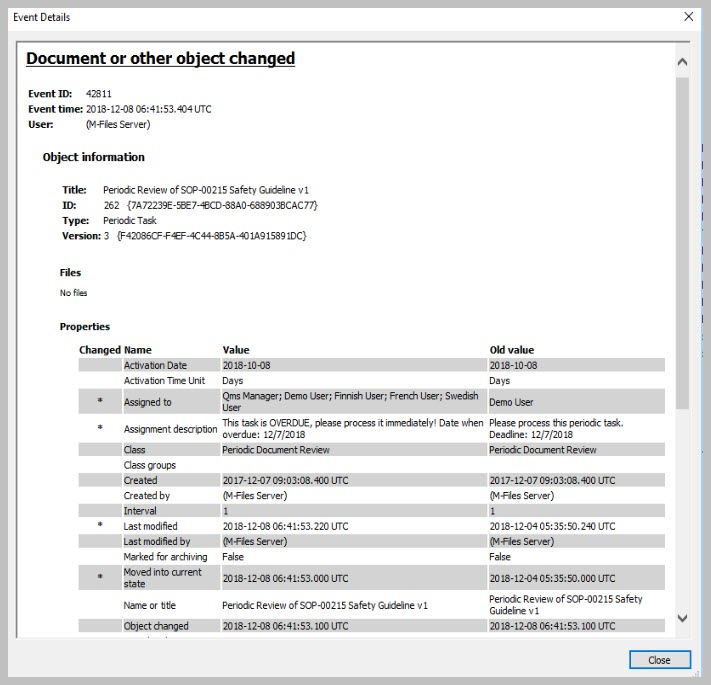
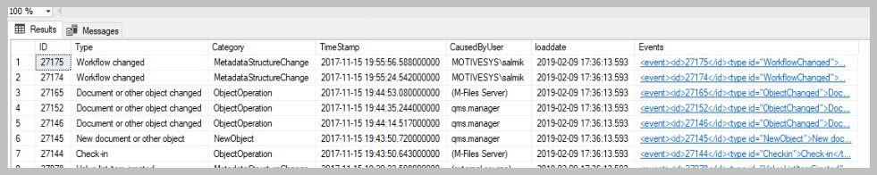
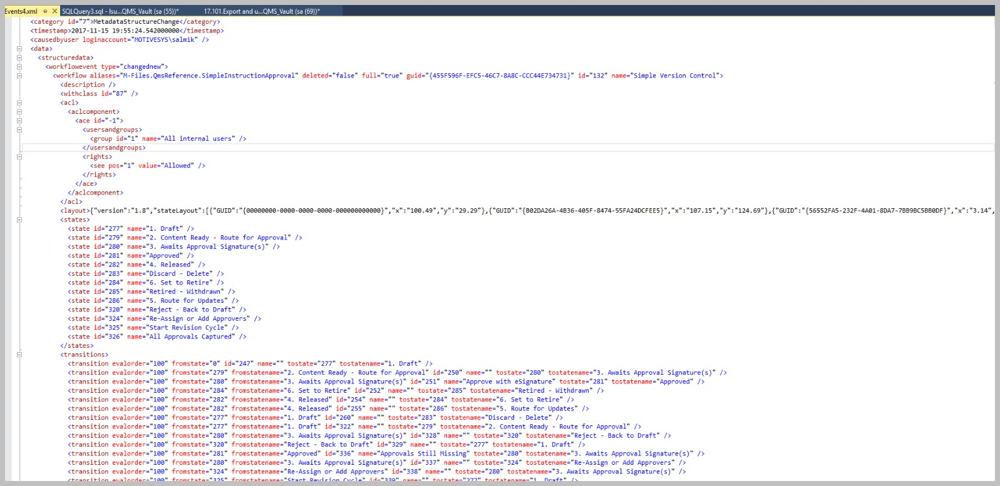

Reports from the extended Event log¶
One of the hidden features of the Connector is to get the M-Files Event log and produce reports from it. This works with both standard and extended event log in M-Files. This illustration will focus on the extended event log.
M-Files event log reports many different types of events. Each type of event will include a distinct set of properties recorded for the event. The properties are a rich set of information about what has happened in the vault, depending on the type of the event that took place. Any export of the event log must allow for exploring the events by type.
To make the most of the Connector’s capability one need to explore the event types and target the types that may provide the information required in the report.
A couple of steps are necessary to make it happen:
Set the object of exploring or reporting from the event log
Update the event log table
Explore the events to identify the type of events to be report on
Prepare the view
Access the view with excel or any other report designer.
There is a handy example script in the installation files : 17.101.Export and use M-Files event log.
The video provides and overview
Exploring the objective¶
A good place to start is with M-Files Admin. Identify the events to be explored further.


Double click an event to explore the available data further.
This is mainly to allow the developer to isolate the properties and the types of data associated with the event.
The properties would differ from one type of event to another.
You would also be able to explore this in SQL when you start to put the view together.
Update the event log table in SQL¶
Using SSMS and the Connector the procedure: spMFGetMfilesLog the M-Files Event Log can be pulled into a SQL Table.
Using the parameter IsClearMfilesLog will allow you to automatically clear the log in M-Files.
If this procedure is run as an agent on a regular basis it would cumulatively load all of the events into the SQL table.
EXEC [dbo].[spMFGetMfilesLog] @IsClearMfilesLog = 0, -- bit select 1 to delete the log in M-Files
@Debug = 0 -- small
The extract of the events are saved in a table MFEventlog_OpenXML. The table only includes the latest export. However, on each export another table is updated MFilesEvents. This table can be explored and used for the views. The columns consist of standard columns that is the same for all event and an XML record for the variable data.

Explore the events¶
Double click on the XML column for an event of your choice. This will display the properties in XML format for the next step.
Identify the properties be included in the report.

Prepare the view¶
The sample scripts below can be used as a guide to access the correct elements and attributes in the XML data.
--show object that is not system objects
SELECT [me].[ID],
[me].[Category],
[me].[CausedByUser],
[me].[TimeStamp],
[me].[Events].[value]('(/event/data/objectversion/title)[1]', 'varchar(100)') AS [NameOrTitle],
[me].[Events].[value]('(/event/data/objectversion/objver/objtype/@id)[1]', 'varchar(100)') AS [ObjectType_ID],
[me].[Events].[value]('(/event/data/objectversion/objver/objtype)[1]', 'varchar(100)') AS [ObjectType],
[me].[Events].[value]('(/event/data/objectversion/objver/objid)[1]', 'varchar(100)') AS [Objid]
FROM [dbo].[MFilesEvents] [me]
WHERE [me].[Category] <> 'System';
--show files downloaded
Select id
,me.[Category]
,me.[CausedByUser]
,me.[TimeStamp]
, Events.value('(/event/data/objectversion/title)[1]','varchar(100)') as NameOrTitle
, Events.value('(/event/data/filename)[1]','varchar(100)') as [FileName]
, Events.value('(/event/data/objectversion/objver/objtype/@id)[1]','varchar(100)') as ObjectType_ID
, Events.value('(/event/data/objectversion/objver/objtype)[1]','varchar(100)') as ObjectType
, Events.value('(/event/data/objectversion/objver/objid)[1]','varchar(100)') as [Objid]
From [dbo].[MFilesEvents] me
WHERE me.Category = 'FileAccess'
-- show public files downloaded
SELECT [me].[ID],
CAST([me].[TimeStamp] AS DATETIME) AS [Timestamp],
[me].[Events].[value]('(/event/data/objectversion/title)[1]', 'varchar(100)') AS [NameOrTitle],
[me].[Events].[value]('(/event/data/filename)[1]', 'varchar(100)') AS [FileName],
[me].[Events].[value]('(/event/data/ipaddress)[1]', 'varchar(100)') AS [IPAddress],
[me].[Events].[value]('(/event/data/objectversion/objver/objtype)[1]', 'varchar(100)') AS [ObjectType],
[me].[Events].[value]('(/event/data/objectversion/objver/objid)[1]', 'varchar(100)') AS [Objid],
[me].[Events].[value]('(/event/data/objectversion/objver/version)[1]', 'varchar(100)') AS [Version],
[me].[Events]
FROM [dbo].[MFilesEvents] [me]
WHERE [me].[Type] = 'File downloaded via public link';
--show items from pre-and post update types
SELECT [me].[ID],
[me].[Category],
[me].[CausedByUser],
[me].[TimeStamp],
[me].[Events].[value]('(/event/data/structuredata/valuelistitem/@type)[1]', 'varchar(100)') AS ChangeType1,
[me].[Events].[value]('(/event/data/structuredata/valuelistitem/vlitem/@value)[1]', 'varchar(100)') AS ItemValue1,
[me].[Events].[value]('(/event/data/structuredata/valuelistitem/@type)[2]', 'varchar(100)') AS ChangeType2,
[me].[Events].[value]('(/event/data/structuredata/valuelistitem/vlitem/@value)[2]', 'varchar(100)') AS ItemValue2
FROM [dbo].[MFilesEvents] [me]
WHERE [me].[Events].[value]('(/event/type/@id)[1]','varchar(100)') ='ValueListItemChanged';
Access the view with the report¶
The final step is to use the target script to create a view and to access the view using any report designer, or by setting up a ODBC data connection to the view in excel. Demonstrating this is beyond the scope of this blog.